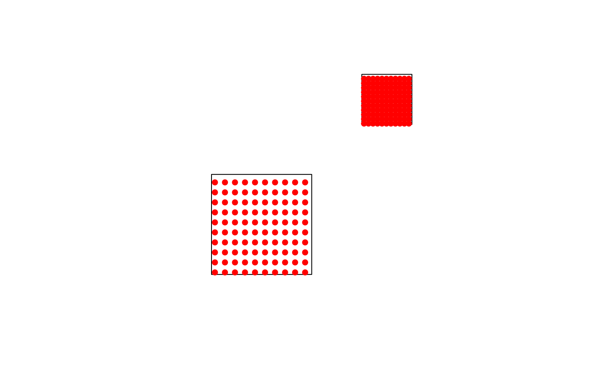

Generate Regularly Spaced Points Inside Polygons
Source:R/spk_poly_to_points.R
spk_poly_to_points.RdThis function generates a regularly spaced grid of points inside each polygon
in a given sf object and assigns it an ID. The point density is determined by a specified column.
See also
Other vector:
spk_join(),
spk_layer_info()
Examples
poly <- sf::st_sf(
region = c("A", "B"),
col_density = c(1, 5),
geometry = sf::st_sfc(
sf::st_polygon(list(rbind(c(0, 0), c(10, 0), c(10, 10), c(0, 10), c(0, 0)))),
sf::st_polygon(list(rbind(c(15, 15), c(20, 15), c(20, 20), c(15, 20), c(15, 15))))
)
)
points <- spk_poly_to_points(poly, col_density = "col_density", col_id = "region")
plot(sf::st_geometry(poly))
plot(sf::st_geometry(points), add = TRUE, col = "red", pch = 16)
